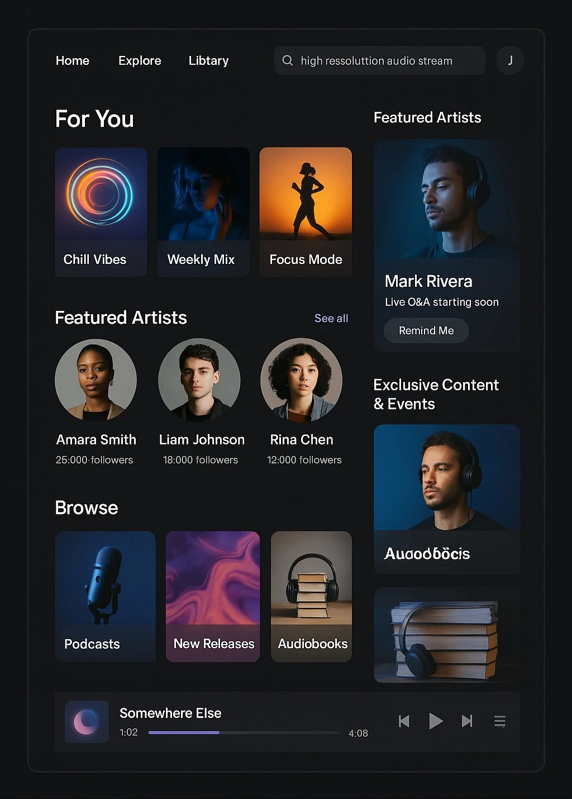
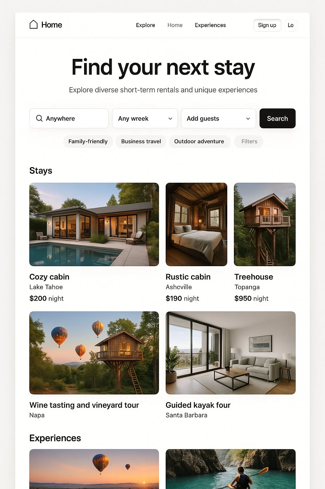
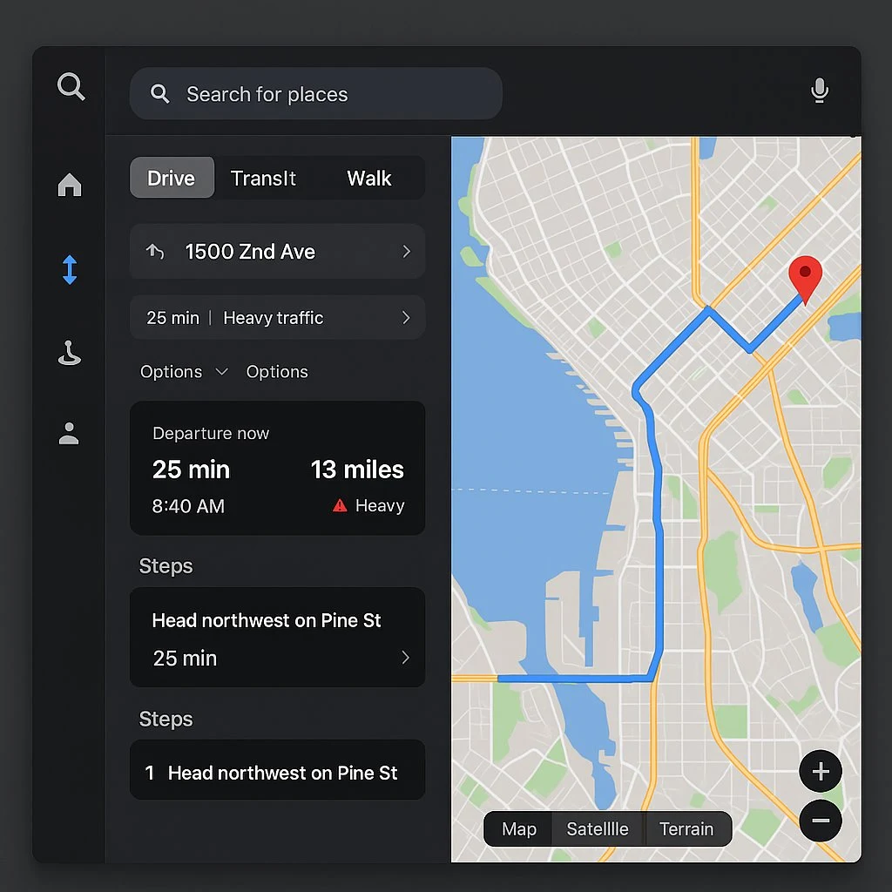
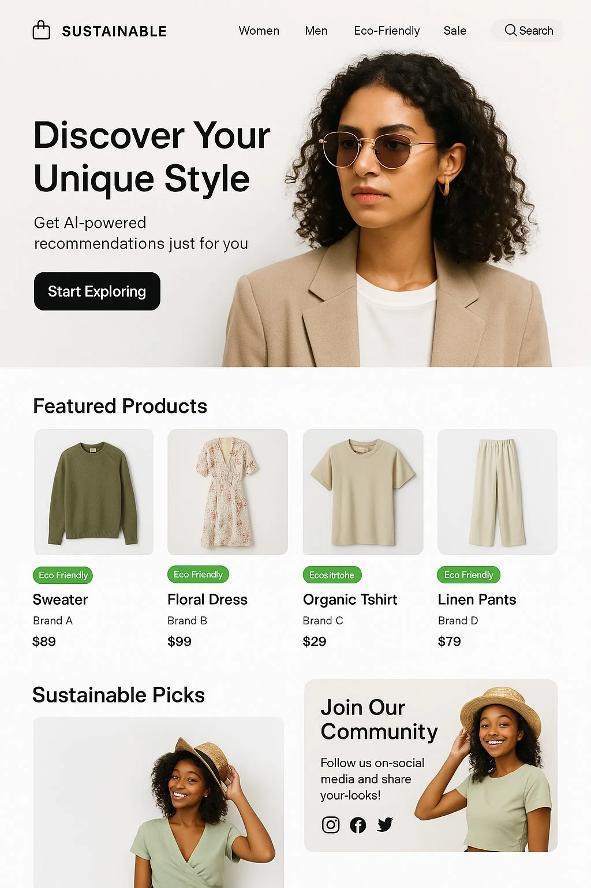
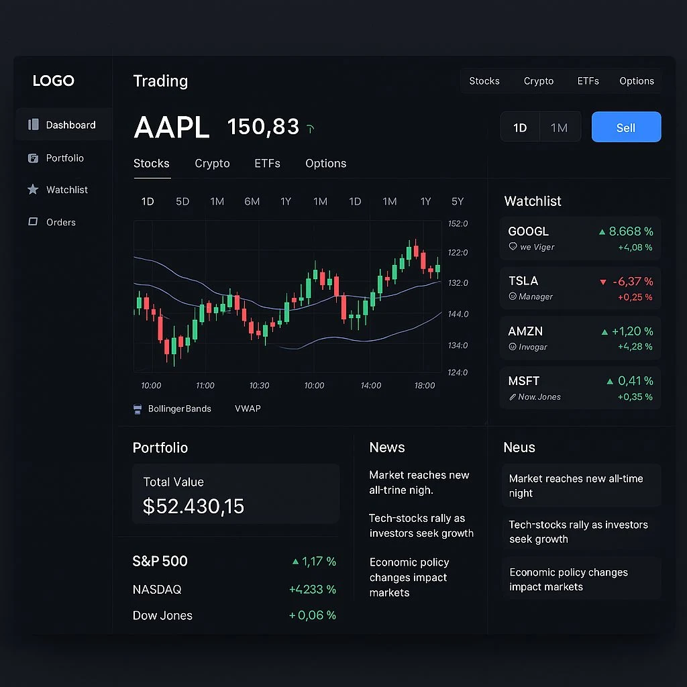
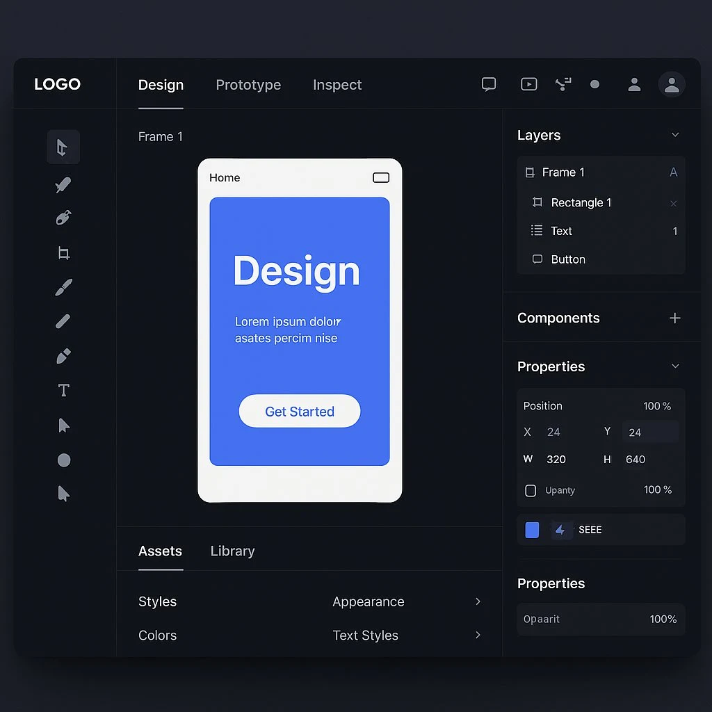
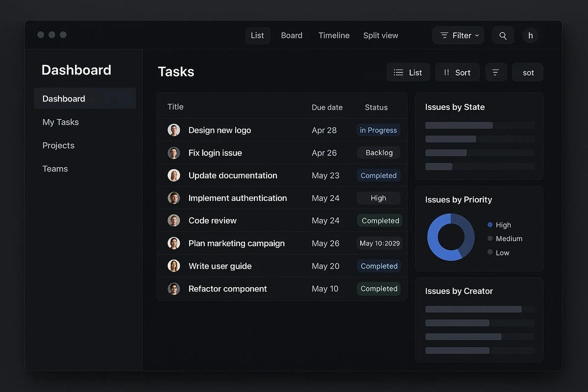
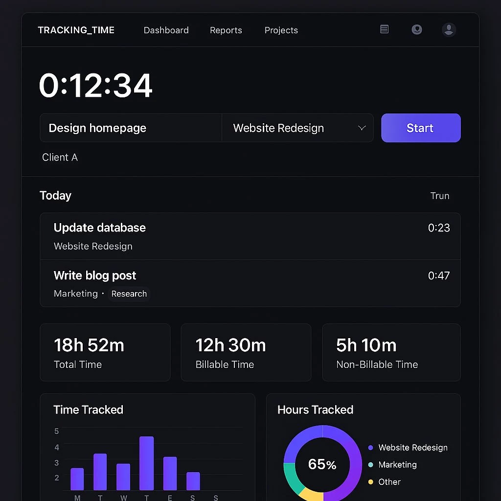

11个顶级设计案例
GPT-4o 仅凭文本和图像即可生成疯狂的 UI、广告和图形。
网页设计
果你想生成提示词，下面是我使用 Perplexity 的 o3-mini 模型，使用以下提示词生成即可：
“创建一个网页应用的概要设计，该应用 <实现某个功能>”
每个提示词生成仅需不到一分钟，这简直太疯狂了。
1. 音乐流媒体应用
核心提示词如下：
目标是创建一个能与 Spotify 竞争的音乐流媒体平台，提供个性化、社区驱动和高质量的聆听体验。该应用将通过增强的社交功能、卓越的音质以及对独立艺术家的支持来脱颖而出，同时保持全球用户的可负担性和可访问性。
## 关键目标
**主要目标：**
提供海量音乐、播客、有声书和独家内容
通过 AI 驱动的推荐和基于心情的播放列表实现高级个性化
为独立艺术家提供推广、变现和直接粉丝互动的工具
**次要目标：**
- 为发烧友提供高分辨率音频流媒体
- 集成社交功能，如协作播放列表、实时聆听会话和艺术家-粉丝互动
- 确保离线播放和设备兼容性
## 目标用户
**主要用户：**
- 寻求个性化音乐体验的千禧一代和 Z 世代（18-34 岁）
- 对高质量音流媒体感兴趣的发烧友
- 寻找平台发展受众的独立艺术家
**用户画像：**
- 全球覆盖，重点关注重视音乐发现和社区参与的城市科技爱好者
## 竞品分析
**Spotify：**
- 优势：庞大的曲库（1 亿+歌曲），如 Discover Weekly 等精选播放列表，社交分享功能
- 劣势：缺乏无损音频；因数据收集引发的隐私问题
**Apple Music：**
- 优势：高解析度无损音频和空间音频；与 iOS 设备无缝集成
- 劣势：社交功能有限；订阅费用较高
**Tidal：**
- 优势：HiFi 音质；艺术家友好的支付模式
- 劣势：用户基数较 Spotify 小；精选播放列表较少
**SoundCloud：**
- 优势：专注于独立艺术家；用户上传内容
- 劣势：主流音乐目录有限；界面不够精致
## 设计需求
**功能需求：**
- 根据用户偏好（如基于心情或活动）定制的海量音乐库和精选播放列表
- 为高级用户提供高分辨率音频流媒体（无损音质）
- 协作播放列表、实时聆听派对和艺术家问答等社交功能
- 为独立艺术家提供上传曲目、追踪分析和通过粉丝订阅或捐赠直接变现的工具
**视觉设计：**
- 具有可定制主题（亮/暗模式）的简洁界面
- 动态专辑封面视觉和互动播放列表，提供引人入胜的用户体验
- 用于发现新音乐、播客或有声书的直观导航

2. 个人理财应用
核心提示词如下：
目标是开发一个提供全面数字银行平台的网页应用，重点关注多币种账户、投资工具和无缝国际交易。该竞争者将通过优先考虑用户隐私、增强金融教育以及为不同客户需求（包括家庭、频繁旅行者和小企业主）提供定制解决方案来脱颖而出。
## 关键目标
**主要目标：**
- 提供具有竞争性汇率和低费用的多币种账户
- 提供包括股票、ETF 和加密货币在内的强大投资选项
- 实现具有透明定价的即时国际汇款
**次要目标：**
- 通过 AI 驱动的金融洞察和预算工具增强用户参与度
- 引入家庭友好功能，如共享账户和家长控制
- 为中小企业提供量身定制的银行解决方案，包括发票和费用跟踪
## 目标用户
**主要用户：**
- 寻求便捷金融解决方案的科技精通千禧一代（18-35 岁）
- 管理多币种财务的频繁旅行者和外籍人士
- 需要经济高效银行工具的小企业主
**用户画像：**
- 全球覆盖，重点关注欧洲、北美和亚洲的城市专业人士
- 重视透明度、低费用和创新金融服务的用户
## 竞品分析
**Revolut：**
- 优势：全面的产品供应（多币种账户、投资），强大的品牌认知度
- 劣势：因广泛数据收集引发的隐私问题；对家庭友好功能关注有限
**N26：**
- 优势：简洁的界面和强大的客户支持
- 劣势：与 Revolut 相比，投资选项较少
**Wise（原 TransferWise）：**
- 优势：国际转账的透明费用
- 劣势：除汇款外，银行功能有限
## 设计需求
**功能需求：**
- 支持至少 40 种货币的多币种账户，采用银行间汇率
- AI 驱动的财务助手，用于预算、储蓄目标和消费洞察
- 提供股票、ETF、加密资产和贵金属的投资平台
- 应用内即时点对点转账和低成本外部转账
**视觉设计：**
- 为桌面和移动设备优化的简洁现代界面
- 可自定义仪表板，允许用户优先使用常用功能
- 为用户舒适度提供的亮/暗模式选项
3. 短期租赁应用
核心提示词如下：
目标是创建一个提供短期租赁和独特旅行体验的网页应用。该平台将通过增强的信任度、透明度以及针对特定旅行者需求（如家庭、商务人士和冒险爱好者）的精选服务来脱颖而出。
## 关键目标
**主要目标：**
- 提供多样化的住宿选择，包括整栋房屋租赁、共享空间和独特住所（如树屋、豪华露营）
- 提供由当地人策划的旅行体验和活动
- 建立强大的信任框架，包含严格的房东和房客验证流程
**次要目标：**
- 通过高级搜索过滤器（如宠物友好、远程工作设施）提升用户体验
- 通过推广环保住宿支持可持续旅游计划
- 集成无缝支付系统并提供灵活的取消政策
## 目标用户
**主要用户：**
- 寻求真实体验的千禧一代和 Z 世代旅行者
- 寻找宽敞住宿的家庭
- 需要配备工作设施的可靠短期租赁的商务人士
- 将工作和休闲旅行结合的数字游民
**用户画像：**
- 年龄：住宿用户 18-45 岁；体验用户年龄范围更广（18-60 岁）
- 性别：平衡的受众（54% 女性，46% 男性）
- 心理特征：重视个性化和经济性的冒险、体验型人群
## 竞品分析
**Airbnb：**
- 优势：全球品牌认知度、多样化房源、用户友好平台
- 劣势：监管挑战、房源质量参差不齐
**Vrbo：**
- 优势：专注于家庭整栋房屋租赁
- 劣势：单人旅行者或独特住宿选择有限
**Booking.com：**
- 优势：整合酒店和点对点租赁
- 劣势：对独特本地体验重视不足
## 设计需求
**功能需求：**
- 高级搜索过滤器（如预算范围、Wi-Fi 或厨房等设施）
- 经过验证的房源，包含房东评分和评论以确保透明度
- 显示附近景点和活动的互动地图
- 可定制的旅行行程，将住宿与本地体验结合
**视觉设计：**
- 简洁界面，提供直观的住宿或体验预订导航
- 为可访问性提供亮/暗模式选项
- 展示房产和活动的高质量视觉效果

4. 地图应用
核心提示词如下：
目标是设计一个用户友好、注重隐私且功能丰富的导航和地图平台。该应用将通过强调离线功能、实时更新和个性化路线规划来脱颖而出，同时解决 Google Maps 常见的隐私问题和数据依赖等批评。
## 关键目标
**主要目标：**
- 提供精确的驾驶、步行、骑行和公共交通导航
- 提供强大的离线功能，支持下载整个地区或国家的地图
- 提供实时交通更新、危险警报和路线优化
**次要目标：**
- 通过避免不必要的数据收集来优先考虑用户隐私
- 包含可自定义功能，如路线偏好（例如避开收费站或高速公路）和多站点路线规划
- 支持与第三方应用（如网约车服务、旅行规划器）的集成
## 目标用户
**主要用户：**
- 在互联网连接有限的地区寻求可靠导航的旅行者
- 偏好替代 Google 数据驱动生态系统的注重隐私的个人
- 需要精确路线规划和实时更新的通勤者、送货司机和物流专业人员
**用户画像：**
- 年龄：18-60 岁
- 精通技术的个人、频繁旅行者以及城市和农村地区的专业人士
## 竞品分析
**Google Maps：**
- 优势：全面的全球覆盖、实时更新、与 Google 生态系统的集成
- 劣势：严重依赖用户数据；在偏远地区离线性能不稳定
**Waze：**
- 优势：社区驱动的交通警报和实时更新
- 劣势：离线功能有限；主要面向驾驶员
**HERE WeGo：**
- 优势：出色的离线地图；为国际旅行者设计的直观界面
- 劣势：与竞争对手相比，社区驱动的更新有限
## 设计需求
**功能需求：**
- 提供语音引导的逐向导航，支持驾驶、步行、骑行和公共交通
- 离线地图包含街道、地标和兴趣点（POI）的详细信息
- 集成危险警报（如事故、道路封闭）的实时交通更新
- 多站点路线规划，可根据用户偏好自定义路线
**视觉设计：**
- 简洁界面，注重简单性和可用性
- 可自定义主题（如亮/暗模式）
- 高质量的地图视觉效果（卫星视图、地形视图），支持平滑缩放

5. 服装电商平台
核心提示词如下：
目标是创建一个提供个性化、用户友好且可持续的购物体验的时尚电商平台。该应用将通过专注于环保产品、先进的 AI 驱动造型推荐以及与社交媒体平台的无缝集成来脱颖而出，同时保持对欧洲用户的实惠性和可访问性。
## 关键目标
**主要目标：**
- 提供来自知名品牌和新兴设计师的多样化时尚产品
- 通过基于用户偏好和购买历史的 AI 驱动造型推荐，提供高级个性化服务
- 通过突出环保产品和推广负责任的时尚实践来强调可持续性
**次要目标：**
- 整合社交功能，如网红合作、用户生成内容和直播购物活动
- 确保灵活支付选项和快速配送的无缝结账流程
- 通过专用平台或市场支持小型企业和独立设计师
## 目标用户
**主要用户：**
- 对时尚、可持续性和社交媒体感兴趣的年轻人（18-35 岁）
- 寻求环保时尚选择的环保意识消费者
- 寻找新兴设计师独特风格的时尚爱好者
**用户画像：**
- 全球覆盖，重点关注欧洲地区重视时尚和可持续性的城市技术达人
## 竞品分析
**Zalando：**
- 优势：广泛的产品范围、强大的品牌认知度、用户友好的界面
- 劣势：对可持续性关注有限；较少强调社交功能
**ASOS：**
- 优势：丰富的产品供应；强大的社交媒体影响力
- 劣势：由于尺码问题导致较高的退货率；较少关注环保产品
**H&M：**
- 优势：实惠的价格；强大的品牌形象
- 劣势：因不可持续的做法受到批评；较少强调在线个性化
**Farfetch：**
- 优势：奢侈品牌产品；专注于高端时尚
- 劣势：价格较高；对预算有限的消费者不太友好
## 设计需求
**功能需求：**
- 针对可持续产品（如有机材料、二手商品）的高级搜索和筛选选项
- 基于用户偏好、体型和购买历史的 AI 驱动造型推荐
- 网红合作、用户生成内容展示和直播购物等社交功能
- 支持多种支付方式（如 Klarna、PayPal）的无缝结账流程
**视觉设计：**
- 可自定义主题（亮/暗模式）的简洁界面
- 支持 360 度视图和详细产品信息的高质量产品视觉效果
- 用于发现新品牌、趋势或可持续产品的直观导航

6. 交易应用
核心提示词如下：
目标是创建一个现代化、直观且功能丰富的交易网页应用，同时满足新手和高级交易者的需求。该应用将强调简洁性、可定制性和实时数据，为用户提供无缝的交易体验，同时与 Robinhood 等竞争对手形成差异化。
## 关键目标
**主要目标：**
- 提供跨多种资产类别（股票、加密货币、ETF、期权）的实时交易功能
- 提供可定制仪表板、技术分析图表和市场洞察等高级工具
- 通过响应式网页设计确保跨设备访问性
**次要目标：**
- 为新手交易者提供教育资源
- 引入游戏化元素以提升参与度，同时不轻视金融决策
- 保持低交易费用以吸引注重成本的用户
## 目标用户
**主要用户：**
- 寻求教育工具和简化交易流程的新手投资者
- 需要高级分析、实时数据和可定制功能的有经验交易者
**用户画像：**
- 年龄：20-50 岁
- 对个人理财和投资感兴趣的技术达人
- 收入：中高收入人群
## 竞品分析
**Robinhood：**
- 优势：简化的用户界面、低费用、移动优先策略
- 劣势：对高级交易者的定制化有限；缺乏强大的教育内容
**E TRADE：**
- 优势：高级图表工具；全面的研究资源
- 劣势：费用较高；对新手不够友好
**Webull：**
- 优势：为有经验交易者提供的高级工具；为新手提供的模拟交易
- 劣势：对新用户来说界面过于复杂
## 设计需求
**功能需求：**
- 提供亚秒级更新的实时市场数据
- 高级图表工具（蜡烛图、Heikin Ashi）及多种指标（布林带、VWAP）
- 可定制仪表板，包含观察列表、投资组合表现和新闻推送等小部件
- 直接从图表或观察列表执行交易的无缝体验
**视觉设计：**
- 强调清晰度和可用性的极简设计
- 为用户舒适度提供的亮/暗模式
- 为新手和专家提供清晰操作指引的直观导航

7. 图形设计软件
核心提示词如下：
目标是创建一个基于网页的设计和原型制作平台，将强大的编辑功能与协作、实时功能相结合。该应用将同时满足个人设计师和团队的需求，在无缝的浏览器环境中提供图形设计、UI/UX 设计和原型制作工具。
## 关键目标
**主要目标：**
- 提供高级图形编辑工具（图层、蒙版、画笔）以实现像素级完美设计
- 为团队提供实时协作功能，包括共享库、注释和版本控制
- 提供原型制作工具，创建具有过渡和动画效果的交互式设计
**次要目标：**
- 支持离线编辑和云同步功能
- 与流行设计生态系统集成（如 Adobe Creative Cloud、GitHub 等开发者工具）
- 确保跨设备和浏览器的兼容性
## 目标用户
**主要用户：**
- 图形设计师、UI/UX 设计师、网页设计师
- 协作开发数字产品的产品经理和开发者
- 寻求经济高效设计解决方案的小企业和初创公司
**用户画像：**
- 年龄：20-45 岁
- 创意产业或产品开发领域的技术达人
## 竞品分析
**Photoshop：**
- 优势：高级栅格编辑工具，丰富的插件生态系统
- 劣势：学习曲线陡峭，协作功能有限
**Figma：**
- 优势：实时协作，基于浏览器的可访问性
- 劣势：离线功能有限，大型项目资源消耗大
**Adobe XD：**
- 优势：与 Adobe 生态系统无缝集成
- 劣势：需要插件才能实现完整功能
## 设计需求
**功能需求：**
- 基于图层的编辑，支持蒙版和混合模式
- 用于可缩放设计的矢量编辑工具（钢笔工具、形状）
- 具有交互元素（可点击热点、动画）的原型制作功能
- 可重用组件（如样式、颜色、字体）的共享库
- 支持分支/合并功能的实时协作
**视觉设计：**
- 简洁直观的界面，减少干扰
- 为用户舒适度提供的亮/暗模式选项
- 适用于桌面、平板和大屏幕设备的响应式设计

8. 电子邮件客户端
核心提示词如下：
目标是创建一个基于网页的电子邮件服务，提供简洁、注重隐私且功能丰富的平台。该应用将强调用户控制、高级组织工具以及与生产力工作流程的无缝集成，同时解决界面杂乱和隐私问题等常见痛点。
## 关键目标
**主要目标：**
- 提供简洁直观的界面，高效管理电子邮件
- 通过端到端加密和最小化数据收集增强用户隐私
- 提供智能文件夹、可自定义标签和 AI 驱动搜索等高级组织工具
**次要目标：**
- 集成日历、任务管理和文档协作等生产力工具
- 支持多账户统一收件箱功能
- 提供离线撰写和管理电子邮件的功能
## 目标用户
**主要用户：**
- 寻求安全电子邮件解决方案的专业人士
- 寻找 Gmail 替代品的注重隐私的个人
- 需要集成生产力功能的协作电子邮件工具的小型企业
**用户画像：**
- 年龄：25-55 岁
- 重视简洁性、安全性和效率的技术达人
## 竞品分析
**Gmail：**
- 优势：与 Google Workspace 集成，强大的搜索功能，丰富的功能
- 劣势：数据收集引发的隐私问题；对部分用户来说界面杂乱
**ProtonMail：**
- 优势：端到端加密和强大的隐私保护
- 劣势：免费版功能有限；相比 Gmail 界面不够直观
**Outlook：**
- 优势：与 Microsoft Office 工具集成；专注收件箱组织功能
- 劣势：免费版包含广告；需要 Microsoft 订阅才能使用高级功能
## 设计需求
**功能需求：**
- 对所有电子邮件和附件进行端到端加密
- 自动标记、稍后处理和基于重要性的邮件优先级等智能组织工具
- 统一收件箱管理多个账户
- AI 驱动的快速定位邮件的高级搜索功能
**视觉设计：**
- 可自定义主题（亮/暗模式）的极简界面
- 清晰的导航菜单，减少杂乱
- 附件和嵌入媒体的高质量预览
9. 流媒体平台
核心提示词如下：
目标是创建一个提供多样化内容库、个性化推荐和创新功能的流媒体服务，以提升观看体验。该平台将通过专注于小众内容、社区参与和灵活的定价模式来脱颖而出，同时保持全球用户的负担能力和可访问性。
## 关键目标
**主要目标：**
- 提供包含电影、电视剧、纪录片和原创内容的庞大内容库
- 通过基于用户行为和偏好的 AI 驱动推荐实现高级个性化
- 支持实时观看派对、讨论论坛和用户生成内容等社区功能
**次要目标：**
- 引入灵活的定价模式（如按需内容选择、分级订阅）
- 确保与各种设备（智能电视、移动应用、游戏机）的无缝集成
- 提供支持 4K、HDR 和杜比全景声的高质量视频流媒体
## 目标用户
**主要用户：**
- 寻求多样化内容选择和社交功能的年轻人（18-35 岁）
- 对独立电影、纪录片或国际内容感兴趣的小众观众
- 寻找带有家长控制功能的实惠娱乐解决方案的家庭
**用户画像：**
- 全球覆盖，重点关注重视内容发现和社区参与的城市科技爱好者
## 竞品分析
**Netflix：**
- 优势：庞大的内容库、强大的品牌认知度、用户友好的界面
- 劣势：成本不断增加；对小众内容或社区功能的关注有限
**Amazon Prime Video：**
- 优势：与亚马逊生态系统集成；免费配送等额外福利
- 劣势：界面混乱；对社交功能的重视不足
**Hulu：**
- 优势：专注于电视剧；实惠的定价选项
- 劣势：国际内容有限；原创内容数量较 Netflix 少
**Disney+：**
- 优势：独家迪士尼、皮克斯、漫威和星球大战内容；家庭友好型定位
- 劣势：除迪士尼系列外，内容多样性有限
## 设计需求
**功能需求：**
- 基于用户观看历史和评分的高级搜索和推荐算法
- 包含实时聊天、用户评论和评分的社区功能
- 允许用户选择特定内容包或按需选择的灵活定价模式
- 支持 4K、HDR 和杜比全景声的高质量视频流媒体
**视觉设计：**
- 可自定义主题（亮/暗模式）的简洁界面
- 突出新发布内容、用户收藏和热门标题的动态内容展示
- 用于发现新内容或访问个性化推荐的直观导航
GPT-4o 生成的效果图：
10. 任务看板/项目管理应用
核心提示词如下：
目标是设计一个简洁、直观且高效的网页应用仪表板，专为任务管理和生产力追踪而打造。该仪表板将优先考虑速度、简洁性和美观性，同时为用户提供可操作的洞察。
## 关键目标和目的
**主要目标：**
- 为用户提供实时数据分析，以追踪任务、团队表现和项目里程碑
- 支持跨多种视图（列表、看板、时间轴、分屏）的无缝导航
- 集成可操作的过滤器以支持快速决策
**次要目标：**
- 支持可自定义主题的亮/暗模式
- 确保跨浏览器和操作系统的兼容性
- 提供用于共享仪表板和邀请团队成员的协作工具
## 目标用户
**主要用户：**
- 科技公司、产品开发团队、远程或混合团队
**用户画像：**
- 人口统计：25-45 岁，重视效率和数据驱动决策的专业人士
**需求：**
- 快节奏的工作流程
- 清晰的任务和目标可视化
- 改善团队协作的工具
**竞品分析：**
**Linear：**
- 以问题追踪和项目规划的速度和简洁性著称
- 提供具有高视觉层次的结构化布局
**Geckoboard：**
- 专注于具有实时更新和集成的可定制仪表板
**Polymer：**
- 提供用于任务管理洞察的预制模板
**设计需求：**
**功能需求：**
- 关键指标（如按状态、优先级、创建者分类的问题）的实时更新
- 用于深入分析数据点的交互式过滤器
- 用于详细洞察的全屏分析模式
**视觉设计：**
- 减少视觉干扰的极简界面
- 具有可定制品牌选项的高对比度主题
- 集成页眉、侧边栏和元属性的结构化布局

11. 时间追踪应用
核心提示词如下：
目标是设计一款时尚现代的时间追踪应用，提供深色模式体验。该应用将专注于简洁性、高级自动化和定制化，同时解决手动输入、报告功能有限和缺乏个性化等常见痛点。它将为寻求时尚且功能强大的时间管理解决方案的自由职业者、团队和企业提供服务。
## 关键目标
**主要目标：**
- 提供针对深色模式优化的直观时间追踪界面，具有视觉吸引力
- 提供自动时间追踪、智能提醒和 AI 驱动洞察等高级功能
- 提供可定制分析功能的强大报告工具，用于生产力追踪和计费
**次要目标：**
- 确保与流行项目管理工具（如 Trello、Asana）和日历的无缝集成
- 支持离线追踪，并在重新连接时自动同步
- 通过安全数据存储和加密优先考虑用户隐私
**目标用户：**
- 主要用户：
- 管理多个客户计费时间的自由职业者
- 需要实时生产力洞察的创意或科技行业团队
- 需要准确时间记录用于工资单或发票的小型企业
- 人口统计：
- 年龄：25-45 岁
- 重视美学、功能和效率的技术精通专业人士
## 竞品分析：
**Toggl Track：**
- 优势：简单界面，离线追踪，跨平台可用性
- 劣势：手动输入可能繁琐；报告选项有限；缺乏视觉定制
**Clockify：**
- 优势：无限用户的免费计划；基本项目管理功能
- 劣势：过时的界面；缺乏高级自动化工具
**Timeneye：**
- 优势：用户友好界面；与 Slack 和 Trello 的良好集成
- 劣势：自动化功能有限；缺乏离线能力
## 设计需求
**功能需求：**
- 一键时间追踪，支持手动输入和基于活动检测的自动追踪
- 基于用户行为或日历事件的智能提醒，用于启动或停止计时器
- 可定制报告，以美观的格式可视化生产力趋势、计费时间和项目进度
- 多层任务组织（如项目、客户、标签）用于详细追踪
**视觉设计：**
- 完全优化的深色模式作为默认主题，具有高对比度和鲜艳的强调色以提高可读性
- 极简仪表板设计，具有流畅动画和直观导航
- 动态可视化（如图表、图形）以清晰表示追踪的时间数据
## 技术方实现
- 跨平台兼容性（Web 应用 + iOS/Android 移动应用）
- 离线追踪能力，在线时自动同步
- 与 Google Calendar、QuickBooks、Slack 和 Notion 等流行工具集成
## 独特功能
**深色模式优先设计：**
- 应用默认采用深色模式美学，但为用户提供浅色模式作为可选设置
**AI 驱动时间建议：**
- 基于过去活动的智能提示，建议用户正在处理的工作或在空闲时提醒记录时间
**自动时间分类：**
- 基于关键词或用户行为中的重复模式自动标记任务（如将"邮件"标记为 admin work）
**可定制仪表板：**
- 允许用户通过固定常用项目或报告来定制仪表板以便快速访问
**专注模式集成：**
- 内置番茄钟计时器，带有专注分析功能，帮助用户在追踪工作的同时保持高效
